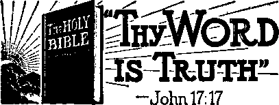
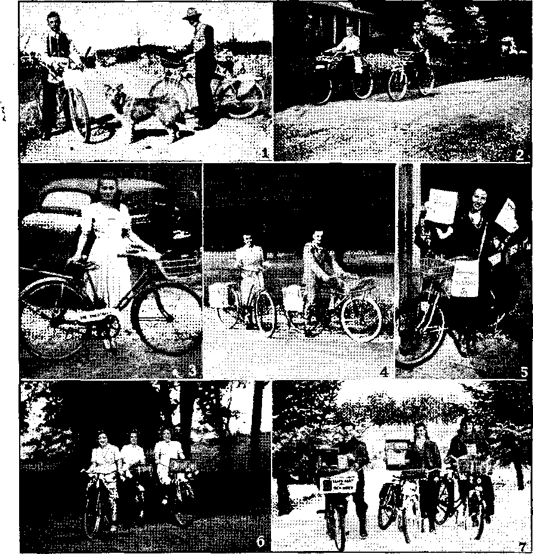

Strategic Central America and Its Peoples
Looking Baek Thirty Thousand Years
Honduras Could Beat California
Working with the United States
• Jehovah’s witnesses and the Supreme Court 14
Dietary—-Inexpensive, Balanced Diet
“Thy Word Is Truth” .
"The Truth Shall Hake You Free”
Presenting “This Gospel of the Kingdom”
Manuscripts and Versions of the Hebrew Scriptures
Patch Your Rubbers and Raincoats
Published every other Wednesday by WATCHTOWER BIBLE AND TRACT SOCIETY, INC. 117 Adams St., Brooklyn 1, N. T., IL S- A.
OFFICERS
President N. H. Knorr
Secretary W. H Van Amburgh
Editor Clayton J. Woodworth
Five Cents a Copy 51 a year in the United States >51.25 to Canada and all other countries
NOTICE TO SUBSCRIBERS
Remittance*: For your own safety, remit by postal or express money order. When coin or currency is lost In the ordinary mails, there is no redress. Remittances from countries other than those named below may be made to the Brooklyn office, but only by International postal money order.
Receipt of a new or renewal subscription will be acknowledge d only when requested. Notice of Expiration jg sent with the journal one month before subscription expires. Please renew promptly to avoid loss of copies. Send change of address direct to us rather than to the post office. Tour request should reach, us at least two weeks before the date of Issue with which it Is to take effect. Send your old as well as the new addressi Copies will not be forwarded by the post office to your new address unless extra postage is provided by you.
Published also in Greek, Portuguese, Spanish, and Ukrainian.
* OFFICES FOR OTHER COUNTRIES
England 34 Craven Terrace, London, W. 2
Australia 7 Beresford Road, Strathileid, N. S. W. South Africa 623 Boston House, Cape Town
Mexico Calzada de Melchor Ocampo 71, Mexico, D. F. Brazil Caixa Postal 1319, Rio de Janeiro
Argentina Calle Honduras 5646-43, Buenos Aires
Entered as second-class matter at ‘Brooklyn, N.
under the Act of March 3, 1873.
Comforting Their Parenti
♦ Time magazine entertainingly toljits 1 readers that “the Filipinos have several ' characteristics in common with the Japanese. They are fairly pious. When they make money,’ they prepare magnificent, costly coffins for their parents, even while they are alive, thereby comforting their declining years”. This sounds like a big story. There are some of Jehovah’s witnesses in the Philippines. Certainly none of them would be such fools. The dead giveaway is contained in the expression “They are fairly pious”. This is a literary way of describing hypocrites. There are many such in every land. If they don’t purchase expensive coffins for their parents, they promise to let the priests in for a cut on the “purgatory” racket, “thereby comforting their declining years.” In either case it is poor comfort for the old folks. Indeed, there are millions of young folks today that have not a particle of what the apostle describes as “natural affection” and would not buy coffins, shares irt “Purgatory” or anything else if they thought it would be any comfort to anybody but themselves.
“This Is God’s World”
♦ In the Washington, D. C., Evening Star inquisitively Ernest D. MacDougall wants to know what the preachers mean when they say, “This is God’s world,” and adds, “If thisis God’s world, I should like very much to see how Satan’s world looks.” Mr. MacDougall has his wish. He sees Satan’s world; it is all about him. The preachers always shut their eyes tightly so that they cannot see the truth that Satan is “the god of this world”' (2 Corinthians 4:4), the “prince of this world” (John 12:31; 14:30). How strange it is that the clergy do not recognize their own father!—John 8: 44.
"And in His name shall the nations hope.”—Matthew 12:21, A.R.V.
Volume XXV Brooklyn, N. V., Wednesday, December 8, 1943 Number 632
Strategic Central America and Its Peoples
THE Central American countries, though small in size compared with the North American and South American nations generally, are nevertheless important, in that they occupy a strategic position in the Western Hemisphere. Not only are they the bridge between two great continents, but they furnish the closest approach between the two great oceans, the Atlantic and the Pacific. In regard to the situation of the Central American countries, -the fact is observed that they are all located within easy bombing range of the great Panama Canal, which is in itself of tremendous importance. Naturally United States Army authorities are interested in insuring against the possibility of any hostile use being made of airfields in these Central American republics. Therefore it is a good thing that all of them are favorable to the United Nations’ side of the war, although adverse influences have not been inactive.
Taken together, the Central American countries cover an area of about 215,000 square miles, which is less than the size of the state of Texas, by far. They at present contain but 8,000,000 inhabitants, of whom many are Indians and mestizos.
Writing of his trip through Central America, Ernie Pyle, correspondent for the New York World-Telegram, includes the following observations:
Official Red Tape.—It’s no worse than ours at home, I suppose, but it’s terrible. In Guatemala, for example, you have to report to the police within 48 hours after arriving. Then you have to get Foreign Office permission at least two days before you leave. Salvador
DECEMBERS, 1943 makes you show $250 in cash before giving you a visa. You have to let some countries know whether you’re coming by land or air, and if you change your mind you have to do it all over again.
Friends.—If you stay in Latin countries long you won’t lack for friends. You’ll meet the local people, but don’t expect to be asked to their homes. They’ll see you, often, at your hotel or a club. You’ll foot most of the bills. But they’ll reciprocate with their time, endlessly, and all kinds of little favors. And you won’t lack for American friends, either. There are lots of nice Americans down there.
Language.—If I were the kind who worked up campaigns I’d certainly beat the tom-tom all over America to get Spanish taught in our primary schools. If we’re serious about the spiritual union of Western Hemisphere countries we’ve got to be able to talk to one another. I’d put Spanish in our schools, starting with the fifth grade. And even if the kids grew up and never saw a Latin in their lives it would still do them as much good as many other subjects. . . .
I’m sure a Latin tourist would have a tougher time in the States than we have in Latin America. Any Latin will help you do almost anything if you stop him and ask him. Remember you’re in one of the politest areas in the world, so just return a little of it.
Central America is now fully in the war. Not many days after Pearl Harbor had passed, one after another of these little republics took the side of the United States and showed that it had no particular sympathy for the totalitarian crowd. *
The area referred to as Central Amer-iea generally includes only the countries of Guatemala, Salvador, Honduras, Nicaragua and Costa Rica, but for good measure Panama is included, which, since its separation from Colombia, is more closely associated with neighbors . to the north than those to the south. &nd for good measure a reference to British Honduras will be thrown in.
Looking Back Thirty Thousand Years
But to look back a little farther than the last hundred years or so. For a considerable part of their history these lands were linked together, being a,t first all part of the vice-royalty of New Spain, which included everything between the isthmus of Panama and the Mississippi, Missouri and Columbia rivers. (In their extent these territories were about equal to what is now the United States.) Later the Central American family became a part of what is now Mexico, and still later they were united in a sort of United States of Central America, but that union did not last long.
Geologically Central America is more closely related to the West Indies than to the continents of the Americas. Its geologic formation is determined by mountain ranges, which run at right angles to the ranges of North America and South America. Students. of the earth and its story like to imagine that at one time there was a great island or string of islands lying between North America and South America, and that the ribbon of land which now connects the continents was raised up from the ocean floor at a later date. This is all intensely interesting and tells of times and scenes very remote from the present. This period is indicated in the Scriptures as the third creative “day” or epoch, in the following comprehensive sentences:
And God said, Let the waters under the heaven be gathered together unto one place, and let the diy land appear: and it was so. And God called the dry land Earth; and the gathering together of waters called he Seas: and God saw that it was good. . . . And the evening and the morning were tbe: third day.
Indeed, it is suggested by some that at one time all the land of the earth was actually one large mass and that its division into continents was a Subsequent development. They, imagine that then the hump or shoulder of South America fitted snugly into the corresponding indentation of the African west coast, and the line actually does follow in a most remarkable way to this day.
However, this is going a bit far afield in a consideration of Central America, and so consideration is given to a period of time when a comparatively small vessel is seen cruising along the coast of Central America. It was Columbus’ fourth journey to America, and on July 30, 1502, he had arrived off the coast of what is now Honduras. He was still searching for a passageway to India, and although he heard reports of the wealth of Mexico, his original purpose held firm. He continued southward and halted at a river now known as Ban Juan de Nicaragua. The natives told him then of a splendid land still farther on, and these accounts lefl Columbus to the conclusion that he must be nearing Asia and the lands of which Marco Polo had written so absorbingly. Continuing, Columbus reached the spot where 400 years later the Panama Canal was built, but he found no passageway then, and had to return to Spain without realizing his ambition.
Rodrigo de Bastidas had preceded Columbus' in sailing along .the coast of America proper from a point near the present Venezuelan boundary westward. Other explorers followed and settlements were made. Missionaries and conquistadors co-operated in subjecting the natives to the dominion of the Spaniards, and this resulted in establishing the vice-royalty of New Spain. And beginning at this point the various countries now making up Central America will be considered separately.
Guatemala, the Ancient
The unwritten history of Guatemala goes far back into the mists of antiquity. The land is mountainous in the main. There are numerous volcanic cones, many of them active to this day. Covered today by tangled jungles are ruins of cities that once existed . as thriving metropolises of Indian culture. They are the ancient ruins of the Maya Empire (referred to also in a preceding article, on Mexico). Here, a thousand years before Columbus came, lived men who charted the courses of the stars and mapped out a calendar abreast of the science of today! Now there are only ruins, amazing indeed, but still ruins. Brilliant birds of the jungle and mischievous monkeys scream where once a thriving civilization carried on its varied activities.
When Gil Gonzales made his first expedition to this territory he came back, figuratively, with 32,000 scalps. He had baptized that many Indians. What they understood by the sprinkling process is not known, but when they had to choose between becoming “good Catholics” or dead Indians, they did not hesitate. Similar methods account for the conversion not only of the natives of other parts of Central America and South America, but also of the former rude tribes of Europe. Judging from what is DECEMBERS, 1943 taking place in that part of the earth today, they are still not far from the originally savage state.
The desired effect, that of making all of South America and Central America at least nominally Roman Catholic, and subjecting them effectively to the Spanish rule, was accomplished. This subjection continued for almost three hundred years.
A large proportion of Guatemala’s three million inhabitants are descendants of these early Indian peoples, and still -speak the languages and dialects that come from the Maya civilization of the long ago. They live away from the modern cities in little villages of th atche'd huts, a far cry from the imposing stone structures reared by their remote ancestors. On their small farms they raise beans and corn, and the women prepare the meals, which consist in large part of tortillas, a sort of cornmeal pancake. The women also make the colorful blankets and textiles for which Guatemala is noted. It is all done by hand. Many of the men labor on the fincas, the estates of the wealthier Guatemalans.
Market day is the bit of sunshine that - makes the life of the Indian something more than mere drudgery. Then the central plazas of the Guatemalan towns become scenes of busy motion and vivid color. Booths go up all over the place. Traders have brought their blankets,
their pottery, their spices, fruit and vegetables, often walking as much as forty miles from village to market. This is the Indian of today.
Chiefly Indian
. _ About sixty percent of the population of Guatemala is pure Indian, and most of the remainder are white and Indian mixed. A majority of the people live on the narrow west coast, which is well-watered and fertile, while the remainder of the country is undeveloped.
Coffee constitutes 70 percent of the Exports. A third of the plantations were formerly owned by Germans, and many of them are still in German hands. Other important crops are bananas, sugar, beans, corn, and wheat. You have heard of chiclets, which you cannot get today because there is a better (?) use than chewing for the chicle gum which is produced in Guatemala.
The principal minerals are silver, gold, copper, iron, lead, and chrome. Puerto Barrios, on the Atlantic side, 800 miles south of New Orleans, is the main port of entry, A railroad connects it with Guatemala city (the capital),and with the Pacific port of San Jose.
The Guatemalan constitution of 1879 (modified 1928) provides for a president ahd a representative assembly of 74 members, and a Counsel of State of seven. The president serves for six years, and is barred from re-election for the succeeding two terms. The gentleman now in office, however, has served since 1931, and by special act of the Constitutional Convention of 1941 will continue to serve till 1949. Roman Catholicism is, as yet, the main religious organization; but education is compulsory.
Freedom of Worship
Guatemala has been an independent republic for 123 years. One of its heroic figures, Justo Rufine Barrios, who was president from 1873-1885, wrote:
One of the most precious liberties of man is that of adoring God according to the dictates of his own conscience, and . . . libei^y of conscience, in order to be real, carries with it the right to worship the Creator according to the belief of each individual . . . and this right, won by humanity after centuries of fighting, has been recognized and sanctioned by all the civilized nations of the world . . . Liberty of conscience is inviolable in the territory of Guatemala.
The Guatemalan declaration of independence (September 15, 1821) was followed in January of the following year by a decree of the junta directiva annexing Central America (of which Guatemala was then a part) to Mexico. Salvador, however, refused to go along with this arrangement, and a war followed. After some eighteen months the Central American republics resolved to form a union and constitute a single nation, and a national constituent assembly July 1, 1823, expressed this purpose. Laws of December 31, 1823, and April 17 and 24, 1824, emancipated the slaves and declared that slaves of other countries coming to Central America would likewise be freed. The union between the Central American provinces did not last, but the slaves remained free.
Relations between Guatemala and the United States are friendly. Co-opetation between the two countries includes maintaining airbases for American patrol planes in Guatemala. National resources are made available for the war effort. The Catilia elastica, wild rubber of the jungle, may some day become a valuable source of the rubber so essential to modern warfare.
Honduras Could Beat California
Honduras is third in size of the Central Americas. Its area of 44,000 square miles is about that of Pennsylvania; and - its population, about a ninth, that is, 1,105,504. The Hondurans are a mestizo people, 95 percent being of mixed Spanish and Indian blood. As to its forests, deserts, mountains, rivers, pastures, and general fertility, Ernie Pyle, in the New consolation
York World-Telegram, says, “If [Honduras] wanted to write a magazine all about itself it could out-superlative California.” _
Mineral resources, although but little developed, are abundant. They include gold, silver, copper, lead, zinc, and iron. There are also antimony and coal. Coconuts, coffee and tobacco are exported, as well as bananas. More than 12,000,000 stems of bananas are exported annually. For a time Honduras had to fight the blight of sigatoka, using a spray which turned the bananas blue. Nobody wanted blue bananas. So another way to use the spray had to be found. Now the copper-sulphate no longer turns the bananas blue. ,
The fight against sigatoka was of considerable interest to the United States, because they take the bulk of the Honduras banana crop and other exports and also outsell competitors in supplying Hondurans with what they need in other lines.
Honduras has a rough and uneven surface, so uneven that swamps are numerous, and the country frequently well-nigh impassable.
Mahogany, which has largely been exhausted in other sections of Central America, is still abundant in Honduras. These splendid trees are widely scattered throughout the forests, and often there are but one or two in the square mile. They frequently reach a height of a hundred feet, and a diameter of twelve or more feet. The natives insist that the mahogany trees, when felled, must be cut in the rainy season and by the light of the waning moon. The tree is richer in color and more- free from sap in the rainy season.
In addition to mahogany the forests contain ebony, dyewood, cabinet woods, and cedar. There are also dense and extensive forests of pine, besides sarsaparilla and other medicinal plants.
Honduras has declared war on Japan, Germany and Italy, doing so within a week after Pearl Harbor. One-year mili-
DECEMBER8, 1943 tary service is required of all men of 21. Foreigners are exempt from service, and naturalized citizens are exempt for ten years. The terms of the Washington Central American Convention of 1923 limit the regular army to 2,500 and the reserves to 43,500.
Education in Honduras is compulsory, from 7 to 15 years of age, and is nonreligious. Recently an aviation school was opened, under the direction of men trained in the United States. Road improvements to facilitate the movement of troops and the transportation of peacetime commerce are having attention. Roads are the great problem of Honduras, because of the very uneven terrain.
British Honduras
An area of 8,600 square miles south of Yucatan and east of Guatemala is still held by Great Britain as a crown colony. It is called British Honduras, or Belize. Its population is 59,985. Belize is the capital. It has a population of 16,687. British Honduras produces mahogany and pine, fruits, coffee, and rubber. There is considerable activity in this rather unhealthful section of Central America. Exports are valued at over $2,500,000 annually. At one time Great Britain also held the portion of Nicaragua known as the Mosquito Coast. It was swampy and unhealthful, like much of the rest of the Central American east coast. It has been relinquished to Nicaragua. It is still largely unexplored, an area of 26,000 square miles, inhabited by the Mosquito Indians.
El Salvador, Coffeeland
We now come to El Salvador, about the size of Maryland and Delaware, and a country with one main crop: coffee. It has luxuriant forests and abundant mineral deposits awaiting development. The population, 1,744,525, is two-thirds Indians and mestizos. Since 1539, when first built, the capital, San Salvador (the name means Holy Savior) has been
wrecked by earthquakes a dozen times. It is so subject to rockings and tremblings of the earth that it is called the swinging hammock. But the city is cosmopolitan and modern and handsome. ■ The bus to San Salvador passes Lake Ilopango. There, for many centuries, the l Indians performed Mayan religious * rites. Each year the four most beautiful girls to be found were thrown into the lake to mollify the gods. The practice probably discouraged beauty contests, but the priests got their victims just the same.
Not far from the capital is the volcano Izalco. It is the most active in Central America; and the glow of the flames can be seen out at sea.
The people of EI Salvador are interested in a Union of Central American Republics, yet they are also very “national” and interested in El Salvador. . The president of El Salvador is elected for six years, and is ineligible for immediate re-election. But President Maximiliano Hernandez Martinez has ruled since 1931, by special provision. He ha^ the reputation of having spilled more blood to insure his rule than did any other Hispano-American ruler. And that is saying something. He is now, however, thoroughly pro-United States. His term of office, by an amended constitution, is secure until 1945. He gives a weekly fireside chat for the information of the people, in imitation of the fireside chats of another American president.
All men over 18 are required to vote. Married women over 25 and unmarried ones over 30 may also.,vote, if they desire to do so. Wopi^n with a professional degree may vote when 21. Men, even if indifferent, must vote.
Wild Boy of El Salvador
Some years ago (in 1940) a boy was discovered in the jungles of this country who had apparently lived there all by himself since he was a baby. He could not talk, although he was about five years old when caught. His arms were long, his chest thick, and he could swing through the trees like a monkey. He lived on live fish and tropical fruits and had no fear of animals, catching poisonous snakes with his bare hands. After he got used to civilized company he was permitted his freedom and often went back to the forest for a night, swinging through the trees and playing on the banks of rivers, but always returning to his new environment. His teachers called him Tarzancita, “Little Tarzan.”
El Salvador has a definite democratic political tradition. One of its outstanding heroes, Fr. Jose Simeon Canas, made a fervent plea for the abolition of slavery before the Constituent Assembly of the Central American Federation in 1823, previously mentioned. He was a sick man at the time, but spoke with great power:
I come with feeble steps, but even were I at death’s door, from death’s door would I come to propose to you a measure on behalf of helpless humans. ... I beseech you, before you do anything else, to proclaim in today’s session the emancipation of our brothers in slavery. . . . We all know that our brothers have been violently deprived of the inestimable gift of liberty, that they groan in servitude, sighing for a kindly hand to break the bonds of slavery. , . . The entire nation has been declared free; so should be. the individuals who compose it.
Freedom for the slaves was, in answer to this plea, written into the constitution, more than forty years before the slaves were freed in the United States.
Relations with the U.S.A.
El Salvador, in 1.823, made diplomatic approaches to •the United States for annexation, or, if not annexed, to be made a protectorate. These overtures were subsequently withdrawn when the danger of a forced annexation to Mexico passed. Relations with the United States have been friendly.
American engineers and finances have
CONSOLATION
aided materially in the construction of the Pan American highway through-El Salvador, The country defied the Axis in 1940, forbidding anti-democratic propaganda and even going so far as to expel the German consul. In 1941 a secret Nazi radio station in El Salvador was shut up and war on the Axis was declared immediately after Pearl Harbor.
Nicaragua, Largest in Size
Nicaragua has an area of about 51,700 square miles, and the population in the last census caipe to 1,380,287, having apparently nearly doubled in ten years. Four hundred years ago and more there were only Indians there, governed by an Indian chief named Nicarao. His little domain was situated upon the shores, of a large lake, and when, on January 21, 1522, Gil Gonzales de Avila came from across the Atlantic, he converted Nicarao to Catholicism, along with about 9,000 natives. Conversions came easy in those days. Now things are different. The influence of the Roman Hierarchy, though still strong, is waning. Early in 1942 the bishop of Granada, Nicaragua, threatened with excommunication from the church all deputies and senators who should approve legislation requiring civil matrimony before an ecclesiastical one. ■
At the time of Will Rogers’ death one of Managua’s leading newspapers said that although he was not a Catholic, masses should be held for him because his aid and sympathy for Nicaragua would never be forgotten by them.
Communists are not welcome in Nicaragua. Early in 1937 the president made it clear that Communist agitation would not be tolerated and that Communists would be deported.
At Leon, the former capital, there is a great cathedral, St. Peter’s, which was built at a cost of five million dollars, though at the time of its construction labor was valued at only 25 cents a day. From the roof of this ornate structure
DECEMBERS, 1943 one can see thirteen of Nicaragua’s volcanoes. Some of the volcanoes are active, but earthquakes in Nicaragua are not as severe as those felt in either Guatemala or El Salvador. The mountain ranges and plateau regions of the country -give it a varied climate. The .lowlands are hot and rather unhealthful. The plateaus are temperate and more livable. The volcanic range is the one along the Pacific coast.
The present capital is Managua, with a population of 60,000. Granada is another noted town. At these three cities are the Nicaraguan universities. There are, ’besides, eight colleges and, all together, forty schools of higher education.
Nicaraguan forests contain trees that yield fine woods. Ebony, mahogany, rosewood, and cedar, are found. There are also jaguars, monkeys, alligators, and other interesting animals. There are parrots, macaws, buzzards, wild turkeys, and hummingbirds. Also plenty of insects. ,
The soil of large parts of the country is very fertile. Sugar cane produces two annual crops, sometimes three. The eastern slopes yield four crops of maize annually.
The Nicaraguan Canal
Nicaragua has the most natural route across the isthmus. The land is so low at one point that in the highlands, stretching from Alaska to Tierra del Fuego. at the tip of South America, there is not a pass as low as that which is found here. Nicaragua lake, 106 feet above the Pacific ocean, and about 100 miles long by 40 miles wide, is the largest body of water south of Lake Michigan until we come to Lake Titicaca, in South America. This lake, the pride of the Nicaraguans, is separated from the Pacific ocean by a strip of land only twelve miles wide and which is never more than 150 feet above sea level. The lake at one time emptied into the Pacific, but now empties into the Atlantic.
The United States is interested in constructing a canal across Nicaragua at this point. It is claimed it would cost less than the Panama Canal and would be a means of saving several hundred miles of ocean travel between Atlantic and Pacific points if both origin and destination are to the north. The canal would relieve the Panama Canal, which is approaching capacity operation. ‘
The Nicaraguan canal route would be 177 miles from ocean to ocean, and of this distance 55 miles would be improved river navigation and 70 miles through lake Nicaragua, leaving but 52 miles to be dug through the relatively low lands. The Nicaraguans would like to see the canal built.
Talk about the negotiations for the building of the Nicaraguan canal has been going on for nearly a hundred years, and work was actually begun on such a canal in 1889 but was discontinued after three years.
Working with the United States '
Nicaraguan relations with the United States are amicable. Even before Pearl Harbor Nicaragua offered its aid to the United States in the event of war. President Anastasio Somoza said that “every Nicaraguan soldier was a potential United States soldier”. He said, further, that after he had given the United States ten thousand fully equipped soldiers in twenty-four hours he would have “twice that number ready for service in three months”.
Ninety-three percent of Nicaragua's foreign trade is with the United States. Pan American Airways connects the capital with the United States and the rest of the Americas. Experts loaned by the U. S. Department of Agriculture have assisted Nicaragua in the systematic cultivation of rubber. Engineers from America have contributed much to the building of the Pan American Highway, in Nicaragua as elsewhere in Central America. So, Uncle Sam has his pleasant side. Maybe you would like to know what the exports are. Well, 60 percent is gold; 30 percent, coffee; and the rest, bananas, sugar, cocoa, and other useful products.
Just recently, while excavating for the approaches to the Ochomogo bridge on the Inter - American Highway, near Rivas, workers uncovered a collection of early Nicaraguan idols. They were sent to the Museum of Managua.
Nicaragua is in many respects modernly American. Mention may be made of its 200 baseball teams, and its drugstores. The latter carry everything from soup to nuts, groceries, clothing, hardware, and jewelry. Also drugs.
Before passing on to the next Central American country it is remarked that Nicaragua has also had its quintuplets, born to Mrs. Hermina Pichardo, July 7, 1935. The past tense is probably due to the fact that no Dr. Dafoe was present, nor any other doctor who could give the infants the care that would have helped them to survive. They died within three hours.
Highway Across Costa Rica
Next the Pan-American Highway brings us to Costa Rica. The first item that greets the eye is that another highway is being rushed across Costa Rica, traversing wild country. This was in 1942, and the highway was a military necessity, called the “Burma Road of Central America”. Its real name is the Pioneer Road of the Inter-American Highway. Its importance is due to the Panama Canal, to which supplies from the United States and other countries must be available without interruption. Planes can carry only limited quantities of necessary materials.
Costa Rica lies between Nicaragua and Panama. Columbus called it the “Rich Coast”; and that, Costa Rica, is its name to this day. He was on his last voyage, and, landing at what is now Puerto Limon, saw Indians decked out in gold disks. He thought there must be plenty of gold around, but it turned out that Costa Rica really had little acces-
sible gold. So the gold-seekers went elsewhere.
Costa Rica is about the size of West Virginia, 23,000 square miles. Half the area lies 3,000 feet and more above sea level. The mountain chain in the northwest has numerous volcanoes, and there have been many eruptions. Some of the mountains are over 10,000 feet in height. The climate is generally healthful.
The population is almost entirely white, except a few Talamanca Indians in the west. The total is 656,129.
The country is covered with forests, dense vegetation that is almost impossible to penetrate except by the rivers. In them one meets the tapir, the deer, the puma. There are also jaguar, armadillo, iguana, and a great variety of monkeys. The rivers abound with fish, and the banks with reptiles, while the branches of the trees are filled with beautifully colored and harsh-voiced birds. Here, as in other Central American countries, one finds the cedar tree and the mahogany; also the cypress and the guayacan. The forest is gradually being pushed back, and additional roads are being built continually.
Tableland Advantages
It is fortunate for Costa Rica, as it is for many other Latin-American lands, that a considerable portion of the country is tableland, several thousand feet higher than the low-lying coast lands. The high elevations make for temperate and spring-like climate, the scenic beauty enhanced by mountains which tower around the borders of the plateaus several thousand feet higher. Three-fourths of the Costa Ricans live on the plateau, or meseta, as they call it. The largest towns are here, within a short distance of one another: the capital, San Jose; the old Spanish capital, Cartago; and Alajuela and Heredia. On the small proprietary farms which surround these cities is grown Costa Rica’s excellent coffee. The farms are well cared for. The farm houses of adobe
DECEMBERS, 19+3 have brightly painted window frames, filled with bright flowers.
Costa Ricans are a freedom-loving people. They have fought for freedom, and will fight for it again, if need be. Indeed they are now on the side of the United Nations in the anti-totalitarian struggle. They declared war on the Axis without delay after Pearl Harbor, and, several months before that infamous attack, the Costa Rican congress passed a law which provided for the deportation of any person circulating Nazi opinions; and the law has been applied, too. Nazi sympathizers have been put in concentration camps.
Costa Rica is proud of having more • teachers than soldiers. But she has large military reserves, some 150,000, in case of need. Being the neighbor nearest to . Panama of the Central American republics, Costa Rica is aware of the strategic importance of its location.
The Costa Rican press is as free as any in the world. Its school system is progressive. It spends more on schools than on any other item in the budget, and the schools are the best buildings in the country. They all teach English from the fifth grade up, and the movement in this direction is spreading over all Latin America. That is doing better by Pan-Americanism than is done in the United States thus far. What is keeping it back here, or who! Education is compulsory in Costa Rica from 7 to 14. There are 65,000 pupils attending the schools. Illiteracy is now 23 percent.
Costa Rica’s greatest hero is the president who, in 1860, laid the foundations of the school system.
Every Costa Rican must vote in the presidential and other elections. The president is responsible to a Congress which has the power to override his authority and often 'does so.
Costa Rica raises cocoa (cacao), from which some 10,000,000 pounds of fine chocolates for the United States are made yearly. Rubber plantations are beginning to be cultivated.
’ 11
Liberty of Worship
Roman Catholicism is the religion of the state, and so, while freedom of worship is recognized by the constitution, its status still leaves something to be desired. As recently as 1929 a subsidy .of 100,000 colones, or $25,000, was granted the Roman Catholic Church for the year. That really means that though the people do not support the Roman Catholic religious system voluntarily, they are made to do so by taxation and through the state. Religious instruction has also been made compulsory in the schools, in harmony with the Hierarchy’s world-wide campaign on the subject. No child will be excused from these classes, except on written instruction from the parent or guardian. The classes in religion receive marks which are as essential to promotion as are grades in other subjects.
Not so long ago a daily paper in Costa Rica carried a half-column of information to the effect that public propaganda of religion will be prohibited, and that freedom of worship, guaranteed by the constitution, shall be exercised only in places set aside for that purpose (that is, under cover).
Religious Comeback
Monastic orders and religious communities have been banned in Costa Rica since 1884, but the legislation on this subject has been repealed, and so the monks and the nuns can come back full force to take up where they left off in the fight against real liberty. The priests, who had been restrained from meddling in and opposition to direction of schools supported by government funds, are now no longer under that salutary rule.
The law prohibiting entry of alien members of religious orders was repealed also, but n'o entry permits will be granted until two months after the end of the present war.
On the other hand stands the information that early last year the president ordered the suspension of the proNazi Catholic weekly Epoca under the extraordinary powers granted him. He considered the weekly an organ of the Nazis, Fascists and Falangists, which it undoubtedly was. The public generally approved the action.
This year the archbishop of Costa Rica, Victor Sambria, said Catholics could be members of the Communist party, now called the Vanguardia Popular. He said that while Communism seeks world happiness and economic welfare, and respects political, social and religious institutions, Catholic workers may belong to Vanguardia Popular. But he piously added, “No Christian can be a Nazi; no Christian can sympathize with Nazism.” There is more here than meets the eye, esteemed reader. The Costa Ricans may well be on their guard against the old paramour of kings, the “harlot” of the Apocalypse.
Republic of Panama
And at last one reaches Panama, which is, as it were, the jumping-off place of North America: South America begins at its southern border. Panama has been called the bridge that links the Americas and the gate that joins the seas. Panama is a small country, but occupies a big place. It is a little larger than Maine, 34,000 square miles. The population of 600,000 is nearly that of Costa Rica. It has a hot climate, being a tropical land and generally low-lying, although there are mountains. Brilliantly colored flowers and tropical trees grow in the jungles which shelter lizards and parakeets, monkeys and alligators.
Panama city was founded in 1519. The original city was destroyed by a buccaneer, and a new one was built not far from the site of the old. Many of Panama’s. cities are old, but it is itself the newest republic in America. Panama is joined with the United States in the defense of the canal, which is strongly guarded by land, sea and air forces. The defenses extend from the Canal Zone, a ten-mile strip leased by the United
States, to points many hundreds of miles distant.
The Panamanians are of many races, white, and black, and brown. They speak Spanish and English. It has been estimated that a third of the people live or make a living from the canal. Others raise bananas, coconuts, sugar cane, coffee, tobacco, corn, and rubber. There are some gold mining and pearl fishing. The rubber yield is small, but helps in the war effort, and the United States gets all Panama can raise.
A bloodless coup in October, 1941, put the pro-United States President Adolpho de la Guardia at the head of Panama’s affairs.
Panama declared war on the Japanese on December 8, 1941, and on Germany and Italy four days later.
Freedom Appreciated
Freedom is as much appreciated in Panama as in the United States, Recently the Panama Star and Herald carried an interesting editorial from which a quotation is herewith given:
The religious sect known as Jehovah’s witnesses, with membership on the Isthmus composed generally of persons of excellent character and devotion to religion, is instrumental in distributing in Panama and the Canal Zone a pamphlet, Fighting for Liberty on the Home Front. It bears the subtitle, “Freedom-Lovers Thrown to the Lions”. . . . The pamphlet ... is concerned mostly with the preservation of freedom of worship and freedom of speech, in both peace and war. It has some excellent •things to say against coercive action to suppress churches and against the dangers of limiting the press or distorting news through governmentally controlled propaganda.
In this vein the pamphlet quotes a statement from the Dean of the-Sehool of Journalism of Columbia University, made in January of this year:
“Throughout the thirty years since the Sehool of Journalism at Columbia was established in 1912, the globe has experienced the DECEMBERS, 1943 creeping paralysis of a black plague of governmental propaganda, censorship and control of news until today the plague has spread to and infected the people of every nation on earth.”
That is serious. Against the effects of this plague we need to consider this statement prominently lettered on one of the principal public buildings in Washington, D, C.; “Ye shall know the truth, and the truth shall make you free.”
That saying also is Scripture. We believe that in the light of human experience and common sense it has been established as fundamentally true and very important. Most errors and misunderstandings arise from not knowing the truth.
Strategically Important
Composed in large measure of peoples who were formerly suppressed, the Central Americans know the value of freedom. Their freedom is, moreover, in considerable measure the result of the American Revolution and Declaration of Independence, and “the shot heard round the world” found numerous echoes in Central America and South America before many years had passed. If in times gone by the Latin Americas, and more particularly the Central American republics, have felt a divided loyalty, shared by Spain of old and the land of liberty to the north,, it may well be that Spain’s reversion to the old repressions and oppressions and America’s forward course in the direction of a freedom w’hich it is hoped will be broader and more real than any that has yet been realized, will bind the Americas more closely together. Hemispheric solidarity and hemispheric defense are the watchwords of the present. Yet in South America and Central America and North America signs ai£ not wanting that it is still necessary to fight for liberty on the home front, to watch the old enemies of freedom and to guard with equal vigilance against the encroachment of new forms of the old totalitarianism that has so long held the people in bondage.
Jehovah's witnesses and the Supreme Court
A Revlaw of Supreme Court Decision*—1942-1943 Term .
By A, L. Wirm, A.C.L.U. Counsel, in The Open Forum, August 21, 1943,
THE claim, asserted widely, that Jehovah’s witnesses through boundless i courage and unending perseverance have 4 won more United States Supreme Court victories for the Bill of Rights than any other single group seems to have ample support in the record of cases before the Supreme Court last term, in which freedom of speech and religious freedom were at issue.
Vigorously fought by Jehovah’s witnesses’ attorney, Hayden C. Covington, of the Society’s headquarters in Brooklyn, New York, in most instances with the co-operation of the national office of the American Civil Liberties Union, the Supreme Court decisions have established stout precedents buttressing the Bill of Rights—precedents of inestimable value to other minority groups in the United States.
A general recognition that the Witnesses, in asserting their constitutional rights, were assuring equally protection of these rights for all, is seen from the reliance by the conservative Los Angeles Times, in its fight for its freedom of the press in the contempt of court prosecution against the Times upon the then favorable court decisions upholding the rights of Jehovah’s witnesses to distribute their literature. This recognition is further evidenced in the appearance in the Supreme Court of the United States of the American Newspaper Publishers Association, representing practically all American newspapers along with the A.C.L.U., supporting the Witnesses, in the historic case in which the Court set aside municipal ordinances requiring the payment of license fees as a condition for the “sale” of Jehovah’s witnesses literature. Additional acknowledgment that the protection of the rights of the humblest minority is essential, in order that the rights of any one may be equally 14 .
secure, is seen by the submission by the Bill of Rights Committee of the American Bar Association in the Supreme Court, as did the A.C.L.U. of a brief in behalf of the Witnesses in the great case in which the Supreme Court struck down compulsory flag-saluting regulations as violating religious freedom.
Noteworthy, too, was the last judicial year of the Supreme Court in that in one session of the Court two former rulings, both involving the Witnesses, tending to undermine judicial support of the Bill of Rights, were stricken by the Court from the structure of American constitutional law.
Three Notable Cases
Recognition by the Supreme Court of Jehovah’s witnesses came in three cases during the last term of the Court:
1. On March 8, when the Court held unconstitutional a Texas ordinance prohibiting the distribution of “commercial” literature except upon a permit. The Court, speaking through Justice Reed, ruled: -
“The Society (Watchtower Bible and Tract Society) is an organization for Jehovah’s witnesses, an evangelical group, founded upon and drawing inspiration from the tenets of Christianity. The Witnesses spread their teachings under the direction of the Society by distributing the books and pamphlets obtained from the Society’ by house-to-house visits. They believe that they have a covenant with Jehovah to enlighten the people as to the truths accepted by the Witnesses by putting into their hands, for study, various religious publications such as Children, Hope, Consolation, Kingdom News, Deliverance, Government, and Enemies."
. 2. On May 3, when the Court annulled municipal tax ordinances as applied to Jehovah’s witnesses’ “sale” of literature.
CONSOLATION
The Court, this time speaking through Justice Douglas, expressed the view that Jehovah's witnesses “spread their inter- , pretations of the Bible and their religious beliefs largely through the hand distribution of literature by full- or parttime workers. They claim to follow the example of Paul, teaching 'publickly, and from house to house’. (Acts 20: 20) They take literally the mandate of the Scriptures, "Go ye into all the world, and preach the gospel to every creature.’ (Mark 16:15) In doing so they believe that they are obeving a commandment of God.”
3. Again on June 14, in upsetting a compulsory flag-salute regulation, the Supreme Court, through Justice Jackson, held that: “The J ehovah’s witnesses, without any desire to show disrespect for either the flag or the country, interpret the Bible as commanding, at the risk of God’s displeasure, that they not go through the form of a pledge of allegiance to any flag. The devoutness of their belief is evidenced by their willingness to suffer persecution and punishment, rather than make the pledge.”
Court Uses Strong Language
In the tax ordinance cases the Court upheld the right to offer for sale religious pamphlets and books as on a par ■with conventional preaching, declaring: “This form of religious activity occupies the same high estate under the. First Amendment as do worship in the churches and preaching from the pulpits. It has the same claim to protection as the more orthodox and conventional exercises of religion. It also has the same claim as the others to the guarantees of freedom of speech and freedom of press.”
The Court upheld the right to express provocative, abusive and ill-mannered opinions, declaring: “Considerable emphasis is placed on the kind of literature which petitioners were distributing —its provocative, abusive, and ill-mannered character and the assault which it makes on our established churches and the cherished faiths of many of us. But those considerations are no justification for the license tax which the ordinance imposes. Plainly a community may not suppress, or the state tax, the dissemination of views because they are unpopular,_ annoying or distasteful. If that device were ever sanctioned, there wrnuld have been forged a ready instrument for the suppression of the faith which any minority cherishes but which does not happen to be in favor. That would be a complete 'repudiation of the philosophy of the Bill of Rights.”
These final great words of the decision are worthy of particular note: “Freedom of press, freedom of speech, freedom of religion are in a preferred position.”
Flag-Salute Decision
Finally, in the famous flag-salute decision, the Court spoke up for “individual freedom of mind in preference to officially disciplined uniformity for which history indicates a disappointing and disastrous end.”
The continuing determination of the Court to protect the citizen from violation of civil rights by local law-enforcement agencies is demonstrated by this caustic phrase of Justice Jackson: “There are village tyrants as well as village Hampdens, but none who acts under color of law is beyond reifeh of the Constitution.”
The Court challenged the view that compulsory participation in “patriotic” ceremonies is conducive to general patriotism, stating: “To believe that patriotism will not flourish if patriotic ceremonies are voluntary and spontaneous instead of a compulsory routine is to make an unflattering estimate of the appeal of our institutions to free minds. We can have intellectual individualism and the rich cultural diversities that we owe to exceptional minds only.at the price of occasional eccentricity and abnormal attitudes. When they are so harmless to others or to the State as those we deal with here, the price is not too great. But freedom to differ is not limited to things that do not matter much. That would be a mere shadow of freedom. The test of its substance is the right to differ as to things that touch the heart of the existing order.”
DECEMBERS, 1943
15
t The historic opinion concluded thus: * “If there is any fixed star in our constitutional constellation, it is that no official, high or petty, can prescribe what shall be orthodox in polities, nationalism, religion, or other matters pf opinion or force citizens to confess by word or act
.their faith therein.” ; ; : :
' The people of the United States in general, and believers in civil liberties in particular, owe a great debt of gratitude to Jehovah’s witnesses for establishing these historic landmarks in the struggle in the United States to preserve and extend the Bill of Rights as a vital and dynamic force in the American democratic way of life.
Dietary
Ice Cream Goes Overboard
♦ Britain has decided that the people’ can live without ice cream; and so they can, and 100,000 retailers that have been handling it will have to handle something else. They averaged to handle about a gallon each per day, or 30,000,000 gallons for the whole country in one year.
Inexpensive Balanced Diet
♦ In the fifteen months from March, 1940, to June, 1941, the authors of The Food You Eat found that a pleasant and satisfactory diet could be obtained at a cost of less than $2 per person per week. Thfe food was purchased in small quantities for two persons in Princeton, New Jersey, where prices were relatively high. The book is published by the Universify of Oklahoma Press.
“There was no access to garden produce,” say the authors, Samuel and Violette Glasstone, “neither was there an opportunity to take advantage of the low price of fruits and vegetables in the summer by canning at home.”
In June, 1942, at food prices then current, the authors estimate $2.50 might be necessary for a satisfactory weekly food allowance. More would be necessary now.
These figures will make some people gasp. Remember, they cover all that one eats. No skimpy meals at home, and semiweekly feasts downtown or at the home of a mother-in-law.
To be specific, here’s the weekly budget for two sedentary adults, based on last year’s prices:
FRUITS AND VEGETABLES
Grapefruit, oranges, lemons, tomatoes (fresh and canned), canned grape
fruit and tomato juices..............—............ $
Lettuce, cabbage, carrots, green peppers,
Fresh fruit in season, dried fruits
Potatoes (white and sweet) ___________________
$1.52
CEREALS
Whole-wheat flour, whole-wheat bread,
oatmeal, rice $ .50
' PROTEIN FOODS
Milk (fresh and canned), cheese$ .90
Eggs ........... •........-.....-..........•• ••.....-.............- -2S
Dried peas and beans, peanut butter, fish, meat .80
$1.98 FATS AND SUNDRIES
Butter and other fats and oils_____
Sugar, syrups, jams, jellies, etc............
Coffee, tea, and sundries 20
$1.00
Total expenditure $5.00
Average weekly expenditure per person ------------------------------------------------------
—Baldwin Sells
A MYSTERY is that which is kept a profound secret. It is something unknown, except, to certain ones, being kept carefully and continuously concealed from all others. The Lord God .Jehovah, being all powerful, can hide or keep secret from every creature, earthly or heavenly, any part or all of His manifold purpose and reveal or make it known at such time as might please Him.
When .Jesus Christ was on earth He taught the people in parables or dark sayings. The disciples came to Him and asked: ‘'Why speakest thou unto them in parables? He answered and said unto them, Because it is given unto you to know the mysteries of the kingdom of heaven, but to them it is not given.” (Matthew 13:10,11) You will observe that Tie did not say, ‘You now know the mysteries of God’; but He said it was given them to know those mysteries. In many things not even His disciples understood Him when they were with Him. On the last night before His death on the tree He was instructing them in various things that would be helpful to them in the days’ to come. On that occasion He said: “When he, the spirit of truth, is come, he will guide you into all truth: for he shall not speak of himself; but whatsoever he shall hear, that shall he speak: and he will shew you things to come.” (John 16: 13) The spirit of truth here mentioned is the holy spirit, the invisible energy of God, which operates upon the minds and organism of those who are in covenant relationship with God. Because this holy force from God was to perform a work instead of Jesus when' returned to heaven, Christ
DECEMBER 8, 1943
Jesus used the masculine pronoun “he” in speaking of the holy spirit of God.
The holy spirit was given to the faithful disciples in Jerusalem at Pentecost, that is to say, fifty days after the resurrection of Jesus from the dead. The record at Acts 2:1-4 relates: “And when the day of Pentecost was fully come, they were all with one accord in one place. And suddenly there came a sound from heaven as of a rushing mighty wind, and it filled all the house where they w’ere sitting. And there appeared unto them cloven tongues like as of fire, and it sat upon each of them. And they were all filled with the holy [spirit], and began to' speak with other tongues, as the spirit gave them utterance.” The King .James Version of the Bible translates the original Greek word pneunia ds “ghost”, but that is obsolete or out-of-date English. In other Bible texts pneuma is translated spirit.
It was at Pentecost that for the first time God’s great mystery began to be understood by the disciples. The mystery of that Righteous Government has been a stumbling block to religionists, both Jews and Catholics and Protestants. But in .Jehovah’s due time He makes plain to all persons of good-will what is the secret of His mystery, and then all such, being rightly exercised thereby, will rejoice with exceeding joy.
The mystery is The Christ, the great One through whom redemption, deliverance and blessing wull ultimately come to all mankind who receive Christ Jesus as King and Savior and then obey Him. For ages Jehovah God foreshadowed His mystery by the use of various men, as illustrations. Yet all of that time He kept it safely secret.
Death has been a terrible enemy of man and will be the last enemy to be wiped out. Death is the very opposite of life. Man’s greatest desire is and always has been to have life everlasting in happiness. From the time of Adam’s expulsion from Eden man has been looking for something upon which to fasten
17
a hope for life and happiness. Satan was the cause of death, and when God pronounced the sentence in Eden- He said that the ‘seed of the woman’ should ■ bruise the head of the Serpent, Satan the Devil. This statement was in the nature of a promise, hut it could not % then be understood. Since Pentecost * some have been enabled to understand the meaning of those words of Genesis 3:15, that in God’s due time the Seed of promise, the seed of God’s woman, will destroy Satan, who has the "power of death”. Nearly two thousand years rolled by after that statement before anything further was promised concerning the Seed.
Then unto Abraham, "the friend of God,” Jehovah made this promise: “I will make of thee a great nation, . . . and in thee shall all families of the earth be blessed.” (Genesis 12:2,3) This was another reference to the mystery; but that promise was not understood in its proper light. Abraham believed God would bless humankind, but he did not understand just the manner in which it would be done. At the time of this promise Abraham had no children. Some years passed and then Abraham and Sarah’s first and only son, Isaac, was horn. Naturally Abraham believed that his natural seed, his son, would be the ruler through whom the blessing would come to the people; but his son Isaac was merely a type of the mystery, God using Isaac to foreshadow the greater one. This promise was renewed to Isaac and to Jacob his son, and at the death of Jacob his descendants were organized into the twelve tribes of Israel, forming the nation of Israel, and were thereafter recognized as God’s chosen nation. (Genesis 49:28; Deuteronomy 26: 5) Then it was that the faithful ones believed that God’s promised blessings would come through this earthly nation, His chosen . people. But in time they became slaves.
As slaves to the Egyptians they had their hopes almost blasted. They were sorely oppressed in the "land of Ham” 18 ■
when God sent Moses to be their deliverer and to lead the people of Israel out of Egyptian bondage. Moses was also a type foreshadowing the One of mystery. (Acts 3:20-23) Moses died; and the promised blessing had not yet come. The prophetic statement made by Moses to the twelve tribes that God would raise up unto Israel one like unto himself led the prophets to understand that there would be a great one raised up from the nation of Israel that would be the deliverer and blesser of humankind.
Joshua followed next in line after Moses. His name signifies "Jesus” or "Savior; Deliverer”. But he also was but a type of the mysterious coming Deliverer. Then the shepherd David became the king of Israel. His name means beloved one. The Jews hoped that he would be the expected one; but in his old age he abdicated the throne in favor of his son Solomon, and yet the blessing did not come. Solomon became the most famous man in the world for riches and wisdom, and the hopes of Israel were centered in him; only to be disappointed. David and Solomon were also but mere types foreshadowing one to come,
The nation of Israel degenerated and under their last king of Judah’s tribe, Zedekiah, they fell into captivity to Babylonia and have continued subject to other governments, Gentile nations, ever since. That unfaithful nation prefigured “Christendom”, ■which professes to be the kingdom of God politically expressed on earth. Like Israel of old, "Christendom” does not understand the Kingdom mystery and hence fights against the true Kingdom of God under Christ Jesus, the promised Seed of His "woman”. Only .God’s witnesses and their companions of good-will understand the Kingdom mystery, and hence these are the ones that today go up and down the length and breadth of “Christendom” and of all nations joyfully and boldly proclaiming, "The kingdom of heaven is at hand.”
consolation
AN APPRECIATIVE reader of the new book, "The. Truth Shall Make You Free", issued by the Watchtower Bible and Tract Society, writes and gives some interesting facts and comments with regard to it. Noting that it cites 891 scriptures in its 379 pages and that it is divided into thirty convenient chapters, he says:
None can read this book without marveling at the new' food from the storehouse, and the new and beautiful ways of presenting the old truths that never lose their charm.
He then goes on to quote portions of the book that particularly appealed to him, and, commenting on these, first calls attention to the striking paragraph in the opening chapter that answers an oft-recurring question. The quotation he . sets forth is from page 36 of the book, as follows:
Is it now necessary to go to some religious temple or cathedral in order to worship God, who is spirit? His servant Paul gives the true answer; "God that made the world and all things therein, seeing that he is Lord of heaven and earth, dwelleth not in temples made with hands; neither is worshipped with men’s hands, as though he needed any thing, seeing he giveth to all life, and breath, and all things; . . . Forasmuch then as we are the offspring of God, we ought not to think that the Godhead is like unto gold, or silver, or stone, graven by art and man’s device. And the times of this ignorance God winked at; but now eommandeth all men every where to repent.”—Acts 17:24-30; 7:48-50.
He continues:
In Chapter 3, entitled "Spirit Sons of God”, and properly giving first place to the first and most prominent of all these, it says, at page 44:
Did this firstborn Son possess immortality, that is, deathlessness? That he did not have this quality and was not immortal at that time is proved by later facts as well as plainly stated in the Bible. Endless life
DECEMBERS, 1943' is dependent upon unending obedience to God. By faithful and perfect obedience the Son would live by his Father’s approval and could live with him forever. The time came, however, that Jehovah God opened up to his Son the opportunity to gain immortality. That the Father gave the Son such opportunity is proved by the Son’s statement: “As the Father hath life in himself; so hath he given to the Son to have life in himself.” (John 5:26) This also proves that Jehovah is the Life-giver to the Son.
In Chapter 4, entitled “Earth’s Creation”, page 67 contains some very wholesome information for those who think that, regardless of what is said of Christ Jesus, they have immortal souls, anyway. If they have, so have the whales: .
Genesis 1:20-23, Roth. God’s Word of truth as above quoted proves the existence of earthly souls thousands of years before man’s appearance. God’s inspired Record calls the sea monsters and other sea creatures, and also the birds, “living souls,” because they lived and had a measure of intelligence. In the original Hebrew of the Bible this expression is nephenh chayyah, the very same expression that is applied to man by his Creator. Keeping this truth in mind will help the student of God’s Word to get free from the great religious . confusion and darkness on the question, What is a human soul, and can it die like the lower animals? If your copy of the King James Version or American Standard Version has marginal reference readings, you ean prove the above by the references of verses 20 and 30 to the margin.
Present conditions in the earth are due to the tragedy that took place in Eden. In Chapter 6 this is discussed under the title “Loss of Freedom”, and at page 91 is found this:
The condition of the future offspring was primarily affected by what he [Adam] did rather than what Eve did. God could
have created another perfect wife for Adam, if need be, in order that the divine mandate to fill the earth might be carried out. Hence the divine judgment declares: ■ “By one man sin entered into the world, and death by sin.” (Romans 5:12) Jehovah God had said to Adam that, if disobedient, “thou shalt surely die.” The serpent said 4 to Eve: “Ye shall not surely die.” On the serpent’s religious contradiction of God’s Word are based the doctrines of immortality of the human soul, and of temporary punishment of church members in a blazing “Purgatory”, and of eternal torment of unconverted sinners in a “hell” of literal fire and brimstone.
“Deliverance Promised”
This is the title of chapter-7, and at pages 100-101 occurs this scholarly presentation which upsets the Mariolatry cart at the very first place in the Bible where it intrudes:
Referring not to his “woman”, but to her “seed”, Jehovah served this unchangeable notice on the.Old Serpent, the Devil: “It shall bruise thy head, and thou shalt bruise his heel.” It is therefore a wresting'of the Scriptures and is a religious attempt to support Mariolatry when the Catholic Douay Version Bible translates God’s words: “She shall crush thy head, and thou shalt lie in wait for her heel.” The footnote of the Douay Version says such rendering is made according to “divers of the fathers” and ■ “conformably to the Latin” (The Vulgate). Certainly, though, it is not conformably to God’s Word, which was here written originally in Hebrew. In the Hebrew text the word seed (zero') is masculine, and the pronoun which the Hebrew uses is not feminine, but is masculine, he (hu). Likewise, the possessive pronoun thereafter used is not feminine {her), but is masculine {his). Hence all the accurate and non-Catholie translations read correctly with the original Hebrew: "He shall crush thy head, but thou shalt crush his heel.” —Roth.; A. R. V.
In Chapter 9, entitled “Advocates of Freedom”, there is an enlightening and convincing discussion that men and women, and not Almighty God, are the ones directly responsible for most of the births of human creatures.
The following is on page 115:
“And the man [Adam] knew Eve his wife; and she conceived, and bare Cain, and said, I have gotten a man with the help of Jehovah.” (Genesis 4:1, A. R. V.) *
Was Eve doing credit to Jehovah God in thus tying him in with the responsibility for the birth of this imperfect child Cain? Most evidently not, in the light of Cain’s turning out to be the first violent manslayer. Eve was presuming upon God, and by •'her claim she was bringing reproach upon God’s name, so suiting Satan’s purpose well. Since Cain billions of children have been born, all sinful, all diseased, many crippled, many idiot, many blind, and many stillborn. Can the Righteous God be justly charged with the responsibility for the producing of such babes? Is religion true and doing honor to God in claiming that at the time of their emerging from the womb God implanted an immortal soul in the bodies of such babes to make them live ? Only the Devil, religion’s author, could originate such false charges to heap reproach upon Jehovah’s name and to create bitterness in human hearts against the God of perfection and life.
Nearly Six Thousand Years
The chapter “The Count of Time” gives the true facts as to where humanity is on the stream of time. Putting it in a nutshell, 6,000 years will be up at the end of the year 1972. The unanswerable reason for this definite statement can be proved by anybody with the guidance of the information on page 149:
In the record concerning the temple’s construction the great Timekeeper supplies that which fills the gap between the Israelites’ exodus from Egypt to beginning work on the temple. “And it came to pass in the four hundred and eightieth year after the children of Israel were come out of the land of Egypt, in the fourth year of Solomon’s reign over Israel, in the month Ziv, which is tl^e second month, that he began to build the house of Jehovah/’ Thereafter Solomon reigned thirty-six years. (1 Kings 6:1, 2, A. H. V.; 11:42) In the original Hebrew text of these verses the numbers of years are written spelled out in full. It was first hundreds of years after Christ that alphabetic letters began to be used as symbols of numbers, and then these were used merely to number the chapters and verses, but not to change the original Hebrew text.
As religion is wrong on everything else, so also "there is no basis for the religious claim that the native inhabitants of Africa became black-skinned because of God’s curse pronounced upon Canaan by Noah”. See the evidence-on this at page 157, in Chapter 12, entitled “Enemies of Freedom”. The Canaanites experienced the weight of this curse at the destruction of Sodom and Gomorrah and when their land was overrun by the Israelites and they as a people were destroyed.
One of the most charming and convincing pictures in all the Bible is that which shows Abraham representing Jehovah God and his beloved son Isaac representing Christ Jesus. The picture goes still further, and what an astonishing revelation it contains of J.ehovah’s. purposes! Hence the chapter 14, “Birthright of Freedom,” at page 179, has this for the uplifting of the remnant yet here:
By marriage to Isaac, Rebekah became the daughter-in-law of Abraham and became one with Isaac, the typical seed of the promise. This pictures how those who make up Christ’s bride, or “the Lamb’s wife”, would by adoption of God be united with ■ the Seed Christ Jesus and thereby become part of the Seed of the Greater Abraham. This is not the “private interpretation” of any man. The Scriptures remove all doubt of that.
And then, for the delectation of the reader, and the charm of the student, the Scripture proofs are set forth. See Galatians 3:7, 8,16, 26-29, quoted thereafter in the book itself.
All Must “Sell All” to Live
Chapter 15, “A Free Nation Is Born,” makes clear to the reader what Jehovah God meant
DECEMBERS, 1943 by the great drama played in Egypt at the time that Joseph was prime minister to Pharaoh. Read this little excerpt from pages 191-192. When you have read it you will want to read the whole book:
Almighty God, who staged this powerful prophetic drama and preserved the record of it till now, purposed that it should mark out for men the course that leads to everlasting life in this supreme world crisis. All who seek freedom from death, want and fear must obey the instructions.-and law's of the Supreme Ruler, greater than Pharaoh. They must come to God’s Chief Servant, the Seed of his “woman”, Christ Jesus. They must “sell” or devote themselves to Jehovah God and accept at the hands of his great Servant the life-giving supplies of the truth now released through God’s Word, the Bible. Unless this is done, any world conference on material food and any machinery established by world rulers to deal.with the food problem and other postwar problems are vain. Such human expedients will not usher in permanent relief, social security, good order, peace, prosperity, and the desired freedoms. “Man doth not live by bread only, but by everything that pro-ceedeth out of the mouth of Jehovah doth man live.” The One who is greater than Joseph repeated that truth.—Deuteronomy 8:3, A.R. V.; Matthew 4:3, 4.
Twelve pages of blessings are packed into the brief story of Jesus’ earthly experiences in Chapter 20, which chapter is entitled “From Death to Immortality”. From page 256 the following is taken:
Christ Jesus told his disciples to seek first the kingdom of God and its righteousness. He did that very thing himself. He did not indulge in the political affairs of this world, but applied himself exclusively to proclaiming the kingdom of the new world of righteousness. In the synagogue at his home town of Nazareth in Galilee he publicly declared his commission from God to preach, and he was always diligent to discharge his obligation to bear witness to the greatest truth of God/s written Word, the Kingdom. (Luke 4:16-21) He was the anointed Ruler of that Theocratic Government, and he was present. So he was right in preaching, “Repent: for the kingdom of heaven is at hand.” (Matthew 4:17) He did not build a synagogue or a religious building and install himself therein as pastor and ring a bell in a steeple and invite the people to come and hear him preach, and then take up a money collection. He went to the people and freely preached to them, at their private homes and at the synagogues where they congregated and also at the temple in Jerusalem. "And it came to pass afterward, that he went throughout every city and village, preaching and showing the glad tidings of the kingdom of God: and the twelve were with him.”—Luke 8:1.
“The Church of Freemen”
It is not necessary to do more than point to the existence of 256 “Christian” sects in the United States to make clear the fact that there is great confusion as to what is the one true church and of what and whom it is composed. In this chapter, at page 277, all may read the clear, complete description of those and those only who will ever be of the church which is the body of Christ: ■
Being conceived in sin and shapen in iniquity and being hence under condemnation from birth on, there must be a making right or justification of the human creature first, to relieve him of divine condemnation. This is accomplished after the human creature shows his faith, not only by believing in Jehovah as God and in Christ Jesus as the ransom sacrifice for sins. Additionally he must confess to being bought by Christ Jesus’ sacrifice and must make a full and complete consecration of himself to God, to be His and to do His will forever. The believer symbolizes his consecration by baptism in water. The opportunity being open for the Kingdom and also a part with Christ Jesus in the “covenant by sacrifice”, Jehovah God justifies the human creature and counts him as possessing the right to human life. That human life right, however, is at once sacrificed that the consecrated one may be taken into the “covenant by sacrifice”. God begets the justified one by his Word (symbolized by water) and by his spirit, and thus brings that one forth as a spiritual son of God. This acknowledged son of God manifesting faithfulness, God calls him to the Kingdom and takes him into the covenant for that Theocratic Government and then anoints him with his holy spirit. By such anointing the consecrated one is baptized into the “body of Christ”.
It seems too bad to skip four chapters of-this precious book without even mentioning their titles, but turning now to the one, Chapter 26, entitled “Abomination of Desolation”, you will find on page 330 proof that the acts of professed Christians who undertake to set aside the searching requirements and to run ahead and start reigning before God’s time, right down here on earth without Christ Jesus, is exactly that very thing:
Such attempt by professing Christians to ignore the Lord’s rules and time and to establish themselves as kings in the Lord’s name and without his Anointed King is an attempt to ascend the hill of Zion and to stand in the holy place. It is antichrist, because it is a setting up of a counterfeit kingdom of God in the place and stead of the'true kingdom of Jehovah’s Christ. It is confusing and blinds mankind to the truth. It prevents their belief and hope in God’s power to erect his promised Government, and hence leads to destruction. It brings contempt and reproach upon God’s name and kingdom. It is all an abomination of desolation in God’s sight. For this cause it is said to “Christendom”, as it was said to unfaithful Jerusalem: “Behold, your house is left unto you desolate.” (Matthew 23: 38) She is not a holy place.
Extending this, at this time, supremely important thought still further, the next chapter, “Final War for Freedom,” page 342, tells plainly what is unquestionably ahead— how far ahead cannot certainly be known, but it is nigh:
In the postwar “new order” Jerusalem’s modern counterpart, “Christendom,” will surround herself with armies of an international police force for her continued world domination. The Roman Catholic Hierarchy will attempt to act as the spiritual police force of the entire earth. “Christendom” will then feel she can cry 'Peace and safety”. This international police force, or the stationing of order-preserving armies according to the mutual understanding between allied nations, will be for the maintenance of the “abomination of desolation” in the “holy place”. Hence those armies will be really maintained against God and his kingdom. And'when you see this, said Jesus, then you may be certain that “Christendom’s” astounding “desolation” is nigh. Religion will not save her.
“The Thousand-Year Reign"
Every person that is “halfway human” hopes for a straightening-out of the tangled web of human affairs when all who have been and are confused will get to see the straight of things and be able to govern their conduct wisely and well, if they will, by unconditional and complete (there is no other kind) consecration to the doing of God’s will. Read this from pages 366-368 and see if it does not comfort you regarding many who have seemed to have what are called good hearts, no matter what their professions:
They do not come forth all in a twenty-four-hour day or to a judgment day of twenty-four hours’ length. The reign of Christ is a thousand years long, and it provides sufficient time in which to judge them according to the works they perform on earth after awakening out of death. The apostle Peter speaks of the “day of judgment and perdition of ungodly men” and says: “But, beloved, be not ignorant of this one thing, that one day is with the Lord as a thousand years, and a thousand years as one day.” (2 Peter 3:7, 8) At that, this judgment day is not as long as one of God’s creative days. It comes during the last thousand years of the “seventh day”, the day of God’s sabbath or rest,—Genesis 2:1-4.
These, that have “done evil” due to being conceived in sin and shapen in iniquity during this present life, will not come forth to a reward, but according to God’s mercy through Cljrist the Ransomer. They will not come forth to take part in the divine mandate, because that will have been completed by the Lord’s “other sheep”. Hence to these the words of Christ Jesus apply, at Luke 20: 34-38. There he says that Abraham, Isaac and Jacob live in the purposes of God, which is proof that there will be a resurrection of them and others. “And Jesus said unto them, The sons of this world marry, and are given in marriage: but they that are accounted worthy to attain to that world, and the resurrection from the dead, neither marry, nor are given in marriage: for neither can they die any more: for they are equal unto the angels; and are sons of God, being sons of the resurrection.”—A. R. V.
This does not mean they attain to immortality. The angels are not immortal, but are subject to Christ Jesus, who has been rewarded with immortality. Man is a “little lower than the angels”; and hence being “equal unto the angels” means that these resurrected humans do not marry. (Psalm 8:5) By obedience and faithfulness during the judgment day they are regenerated by Christ Je^is, “The Everlasting Father.” Then God approves and justifies them and grants them the right to everlasting life in the Paradise on earth. Therefore they cannot justly “die any more”, because they continue faithful. They attain to “that world”, the new world, a “world without end”. God guarantees them endless life and protects their right to it. They do not attain unto this justification and life-right till the end of the thousand years of Christ’s reign. As it is written: “But the rest of the dead lived not again until the thousand years were finished.”—Revelation 20: 5.
Every person in the world should study this book, and millions will surely do so. The first printing was one million copies. That is a start in the right direction. .
One: way to beat gnsoJme rationing is io make use of the bicycle and go under your own power, as is done bv these witnesses of Jehovah in their work of proclaiming the Kingdom message. (1) Earl and Duane Stoops on the road in the Ozarks of Missouri, with the message of comfort. (2) Consolation magazine delivery on bicycles at Stratford, Conn. (3j Special publisher of Day ton, Ohio, carries phonograph and bookbug in basket. Chain guard carries the words "The Theocracy”. (4) Special publishers, Air. and .Mrs. Walter B. Kietwitz, of Wisconsin fiapids, Wis. Phonographs and book supplies are carried on either side of the rear wheel. (5) A fighter for The Theocracy publishing the good news of the Kingdom somewhere in Florida. (6) Three workers in the rurals of Marion county, Missouri, ready- for a day’s work, with bicycle baskets loaded with books, lunch, and tin cups for drinking. Thirty miles were covered the day this picture was taken. (7) Three well-equipped workers in eastern Pennsylvania.
INTELLIGENT creatures crave knowledge and information. People appreciate the person who can tell true stories and impart interesting facts with readiness and appeal. To many, however, the opportunity to gain a well-rounded-out education is limited. They have few books, and do not have access to extensive libraries. Yet they might, if they would, acquire knowledge of an incomparable kind; for the most wonderful library in the world is likewise the most accessible. The regrettable fact, nevertheless, is that few avail themselves properly of the advantages this library affords. It may be that such will be helped by what follows, and that they will not draw back from the comparatively slight effort they will be called upon to put forth, in order to gain the immeasurable benefits that the world’s most wonderful library affords. While to do it justice is beyond the pen of ,any human writer, it is worth while to describe it in some degree. Come, then, and let us see.
What is your leaning? Do you prefer history? Or do you enjoy science, poetry or philosophy? Or is your preference, perhaps, for biography, or travel? Or would you like to see the department that deals with the world’s most noted proverbs? Or maybe you would like something idyllic. Perhaps, again, it is correspondence and letters that interest you. The library contains all of these literary forms, and more. We find also books of vision arid prophecy; and the ; department of lyrics is not to be overlooked. Saga and adventure, too, are not missing. But now, it may be, you are confused at the very abundance of the contents of this most marvelous library, and you do not know just where to begin. So let us resolve the difficulty by starting at the beginning. Let us enter.
As one comes into the first great division of the spacious halls of the
DECEMBERS, 1M3 library one finds it has in it information of amazing breadth, embracing heaven and earth, sun, moon and stars, oceans and continents, prehistoric monsters, and vast aggregations of living creatures, creeping things, beast and cattle; birds, fish, and then man. You may tarry long in this vast room or pass through it quickly, according to your inclination. But you cannot fail to derive great profit from even a brief passage, if your thirst for knowledge, wisdom and understanding is of the right kind. Having passed through this department, rightly called scientific, you enter upon the historical division. This is of grand scope, high, broad and wide, although you do not immediately realize the spaciousness of the hall as you enter it. There is here a vast amount of information. You look around.
Here is a section devoted to the account of the most tremendous cataclysm that has ever occurred since man was upon the earth: the deluge that “rolled its mighty waters over mountain summits, and engulfed in awful destruction all the inhabitants of the earth”, save but a few, who miraculously escaped to fill the earth anew. The heart beats faster as one dwells, if but for a moment, upon the meaning of it. Then to another section. .
This is devoted to the account of the first attempt at world empire under a religious guise. There is a wide sweep in the record, and the details are few; but the fundamentals of that all-but-for-gotten mighty movement are there. It gained wide popular support, but ignominiously failed, due to divine intervention, exercised to hold back the progress of world-wide totalitarianism.
And here is the record of great pioneers, men of faith, the patriarchs, picturing the pastoral life, sometimes in intimate detail, again in simple outline. The great transactions of the period,
far-reaching in their consequences, are recorded with firm strokes. There is hhre a charm equaled in no other library; the perplexities and sorrows of the wander' ing herdmen, together with their triumphs, are faithfully recorded and en-( thrall the reader as he proceeds in his t way over remote pathways of the past. * Look; here is the record of a mighty priest upon his throne, majestic in his solitary grandeur. Here is the true story of a father contemplating with tearless eyes, but bursting heart, the loss of an only and beloved son, yet strong to make the supreme sacrifice. Then there is the simple yet touching account of a man and a maid, brought together in the bonds of matrimony under Eastern skies, he to become a patriarch, she an ancestress of “thousands of millions”. You next read concerning the brother progenitors of great nations, separated by a quarrel and yet finally reconciled.
Next comes the thrilling story of a noble boy sold into bondage, laid in irons because of the wiles of a woman, released from prison and raised to the highest place of honor in a mighty kingdom, and placed in a position to show kindness to the very ones who were the cause of his exile.
Then follows the record of an entire nation in bondage, oppressed and exploited, until one of their own number, by a remarkable series of circumstances, becomes first the petted adopted son of the ruler’s own daughter, then a fugitive from “justice", and finally the great liberator used to lead a mighty people through the'wilderness to a new beginning and a national existence in a land far away. But before they depart from the confines of their captivity the nation that despoiled them was itself impoverished by divine judgments in a scries of amazing catastrophes. What history is here! ‘
And then history blends with biography as the acts of the “man of God” are recorded. He instructs an awakening people, he disciplines them, he rules 26 , them, leads them in battle and in peace, through ocean, mountains and plains, over rocky steeps and barren deserts, until they come to the very border of a land of amazing fertility. Then they draw back, paralyzed with fear of the inhabitants whom they must vanquish, though not in their unaided human strength. They wander, then, for forty weary years, until the death of the chosen one who led them forth; but they do not see him die, for he climbs a lonely mount and in solitary glory he expires, and the book of his life is closed. None knoweth his tomb.
Then come records of wars and battles, sieges and skirmishes, tumbling walls and burning cities, while the very sun and moon stand still in the heavens, and the most significant battle of all is carried toward its Successful completion. Then peace and tranquillity, prosperity and rest are followed by decadence and subjection to adjacent peoples. Struggle after struggle appear in the record, while the reverses and victories- of a Theocratic nation are followed. Biography, too, appears, in vivid colors and striking contrast. Courageous weaklings, brave cowards, pusillanimous mighty men, modest heroes, and their deeds, are found in the library. Noble women, too, and others.
Continuing your historical research you come to records of judges, princes, kings. Generals, moreover, and mighty warriors, one among them head and shoulders above them all, yet brought to earth by a mere stripling youth. And the youth advances to the front of the stage and dominates the drama for full many a year, until you find him seated upon a throne and directing the concerns of the most remarkable of kingdoms, and preparing the way for his successor, who reigns in unrivaled splendor from a mountain citadel that is ‘the joy of the whole earth, the city of the great King, beautiful for situation’.
Next you find the records of the kingdom as it is divided, its splendor dimin-
CQNSOLATION
ished. Then increasing wars and miseries, infidelity and idolatry. There are occasionally resurgences of national spirit and moral strength, but’ finally an accelerated downward course, which, after a momentary pause on the verge of chaos, leads to the fatal plunge that brings a nation into ruin and captivity, humiliation and desolation. The desolations spread to other nations, whose fall echoes to the ends of the earth. Yet one among them recovers Its national existence and its former estate, and it stands again, a distinct people, restored to their land, yet subject to a greater empire. It looks always for its Messiah and Deliverer, and when He appears upon the scene they reject Him and, after tolerating Him for a few years, impale Him upon a stake.
Still another division of the library tells about the life of this majestic One. In book upon book, chapter after chapter, we read about this Man, an august and awesome figure, humble in greatness. Yes, here, in the library of libraries, we reach the center of all its contents. Here, in infinite varieties, light streams forth in effulgence. It is biography par excellence; for here humanity and divinity meet and blend and heavenly anthems are heard.
Then come records of the followers of the rejected One, and they, too, are misunderstood by the world, and appreciated by the few. They also are rejected as He was, but persevere and do a work beyond the ability of man io measure, though against unbelievable odds and opposition. It is a record few appreciate. Here, too, are the accounts of travels unique in their particulars, genuine in their simplicity, convincing in their directness, grand in their end, amazing in their revelations.
Leaving now the historical department, turn for a brief glance at this superlatively beautiful part of the library, the department of poetry and lyrics, one of the outstanding features. Nowhere else are the beauties and glories DECEMBERS, 1943 of literature to be found as here. One wing of the section is devoted to proverbs and wise sayings, some poetic, others in noble prose, all of the highest class. For there is nothing inferior found in this wondrous library; nothing common or unclean. And, here, in another part is the record of tragedy so vast that one stands “dumb with silence”, as the billows of grief so deeply felt by the writer are shared in varying measure by the reader. Then there is a smaller hall devoted to idyllic prose and poem.
Nor must one forget the library’s great subdivision on laws and statutes, government and jurisprudence. Here are records at once simple and profound, wise and ingenuous, broad and high. Statutes and regulations, rules and precepts of an astoundingly modern ancient people, fully abreast of the wisdom of the twentieth century and beyond it, are here set forth for the instruction of those who delight therein. Directions for an anointed priesthoodj also, are here recorded, an ancient priesthood that served, and might not exploit, the people. Rules of health, at times subtly presented, and measures of sanitation, are also found among these tomes.
Now here see the section on letters that covers a wide range of themes. You find here long letters and short, on deep subjects, simple thoughts, yet all beautiful and noble, things that are true, honest, just, pure, lovely and of good report. Here are letters that dwell on virtue and praise, on personal problems and on interests of universal scope. Also on life, death and beyond.
Then, finally, the sunburst of splendor that is revelation itself, the quintessence of and index to all that is written, with symbols of amazing vividness and picture writing of unsurpassed glory.
Here, then, is the library. Yet only the surface has been scratched; only the merest outline of its wealth has been indicated. For the writing of mortal man cannot begin to do justice to this most wondrous of all libraries, whose contents
kings haVe marveled at and, yet, which the humblest may explore, and revel in. It is there for you to enjoy and to employ to great ends and noble purposes. And it is free, except that the one who would profit by its wealth must come in humility, simplicity. Those who thus come may take ‘of the waters of life [and truth] freely’. For the most wonderful library in the world is—the Bible.
1 i
JESUS ‘had a nuisance value1, is the purport of an uncomplimentary article which appeared in’the so-called Christian Century. The article bears the title “Witnesses Have a Nuisance Value”; and, as Jesus was the “faithful and true witness” and the very foremost of all of Jehovah’s witnesses, the article would, of course, have primary reference to Him. The lady who wrote the letter had no intention to give it the vicious turn which the editor of the Century saw fit to impart to it. She reminded its editor of that little band of early Christians (the apostles) that annoyed the smug long ago; she thought it possible that Jehovah’s witnesses have some truth. And this extract from her letter was good also:
Jesus ‘Had a Nuisance Value’
What other sect has made a dent in our self-styled democracy lately ? Or thrives ■ on ridicule for nonconformity? Who are these simple souls who by refusing to salute the flag show up the intolerance under our vaunted freedom? Whose children are being deprived of education in our public schools because they refuse to take part in a ceremony to a symbol? What other religious group has brought out the very worst in the Supreme Court, and allowed the minority to distinguish itself by dissent and by admission of earlier error? Even our arrogant democracy can become so infuriated with a minor group that its very rights as an organization are taxed and it is classed with peddlers.
TO RECEIVE REGULARLY A MAGAZINE THAT—
Dares to print the truth
Is unbiased
Avoids propaganda
Is free from commercialism Brings comfort to you
By filling out and sending in the coupon below, you will receive a magazine meeting this description. Yes, CONSOLATION is a magazine that every person needs in this unsettled world with so many avenues for humankind to follow. Consult the reliable guide, CONSOLATION magazine, before making your choice.
CONSOLATION magazine is available on subscription basis at $1.00 per year. It is published every other Wednesday. Subscribe and profit.
WATCHTOWER 117 Adams St > Brooklyn 1, N.Y.
Please place my name on the subscription mailing list of the Consolation magazine for one year, for which I enclose $1.00 contribution.
Name ............................................................................. Street ...............................................................................
City ............................................................................... State ................................................................................
Presenting “This Gospel of the Kingdom”
Manuscripts and Versions of the Hebrew Scriptures (In Three Paris—Part 1)
Y THE expression “the Hebrew Scriptures” is meant that portion of the Holy Bible which is older and which is commonly called “the Old Testament”. The Hebrew Bible includes some passages written in Aramaic, the language of the common people of the Jews in Palestine in Jesus’ day, namely, Daniel’s prophecy, chapter 2, verse 4, to chapter seven, verse 28; and Ezra, chapter 4, verse 8, to chapter six, verse 18, together with chapter seven, verses 12 to 26 inclusive. These, however, are all included as a part of the Hebrew Bible, and therefore are not here given separate discussion.
A portion of the Nash papyrus, of the second century B.C., showing a pre-Masoretic Hebrew text, without vowel points and accent markings, and written in the Western style. The above is part of the Hebrew text of the Decalogue, from the fourth to the tenth commandment.
Before the invention of printing from movable type the original writings and also copies thereof were handwritten, hence were called “manuscripts”. The so-called “versions” are translations from the original Hebrew into other tongues orlan-guages. All early versions were handwritten, hence were in manuscript form. Some versions were in themselves .versions of earlier versions from the Hebrew; as, for instance, the old Latin versions were translated from the Greek version of the Hebrew Scriptures. Jerome’s Latin Vulgate translation (of A.D. 383 to 404) was a version direct from the Hebrew, and not through a Greek medium.
The Hebrew text from which our popular English translations or versions were made probably became fixed in
DECEMBER 8, 1943 form as early as the second century A.D. The form in which the Hebrew text is now presented in all existing manuscripts and printed editions of the Hebrew Bible is that of “the Masoretic text”, so called, the development of which text is usually placed somewhere between the sixth and the eighth century A.D. Since then the Hebrew tfext has undergone practically no change of any importance. Prior thereto, the evidence is, a large number of alterations or corruptions were introduced into the text.
The Masoretic text was the work of a group of trained Jewish scholars called “Masoretes”, or Baalei Ha-masorah, that is, “lords of tradition.” Prior to the Masoretic text the Hebrew Bible had no vowel points, that is, signs to indicate the vowel sounds as a/e, o; u. The Hebrew text is made up of words written in all consonants. So the Masoretes undertook to indicate the vowel sounds as theyhadbeenhand-ed down to them by long oral tradition. The earliest Hebrew manuscript, and probably the oldest one existing, is the Nash papyrus. There are four fragments, which, when pieced together, give 24 lines of a pre-Masoretic text of the Ten Commandments and some verses of Deuteronomy chapters five and six. The writing is without vowel markings and seems to belong to the second century A.D, It has recently been put back to the second century before Christ, by W. F. Albright.
The consonantal text (or vowel-less text) the Masoretes preserved and
29
' passed on as it had been transmitted to them, but they also aimed to make sure of its proper pronunciation. Hence they provided the consonantal text with - a complete system of vowel points and ; accents. The actual date when Hie vowel pointing was introduced is not known, ■ but it is probably to be assigned to 4 the seventh century, for the Tiberian or Western system, and to the sixth century for the Babylonian or Eastern system. The Western system developed by the school at Tiberias has its vowel pointings under the Hebrew line, and is now found in all printed editions of the ■ Hebrew Bible. The Babylonian system is above the line, or superlinear.
■ out going to as year hundredth four and year eightieth in was it And ent®
month in fourth the year the in Egypt of land the from Israel of sons bgri srjijn wrj ft
Israel over Solomon reigning to as second the month the it Zif
An illustration of the Masoretic Hebrew text, with vowel points and accent markings, and written in the square Eastern style of letters, suggesting the Babylonian cuneiform writing. The above is the first part of the Hebrew text at 1 Kings 6:1. The sublinear English reading is a word-for-word translation of the Hebrew, and hence reads from right to left.
number of words and letters, or particular words, a certain number of times. They noted particular words in whose cases mistakes of transcription were likely to occur, whether they were to be written full or defective, also their vowel pointing and accentuation, and how many times they occurred so pointed and accented. They even computed how often each letter of the Hebrew alphabet was found in the Bible text. They noted fifteen instances of letters marked with the extraordinary points, and they also commented on all the unusually large or small letters, all suspended letters and all inverted letters; the number of each class of which they computed.
In view of this extreme carefulness in checking over the literal text it is unreasonable to argue that the copyists made a mistake at the verse 1 Kings 6:1, and that it should read, “in the five hundred and eightieth year," instead of, “in the four hundred and eightieth year"; especially so when all Hebrew numbers were
The Masoretes also undertook the collecting of a number of notes on the text, and to these notes the term “Masorah” is now generally applied. Originally the Masorah was preserved in.a distinct book by itself. A plan then arose of transferring it-to the margins of the manuscripts of the Bible. Thus the Masorah is in itself older than the so-called Masoretic text. These notes are not comments of interpretation of the meaning of the text, but are mostly a sort of directory or index of the peculiarities of the text. For instance, they recorded how many verses there were in each book, and the middle verse of each; also how many verses began with particular letters, or began and ended with the same word, or contained a particular spelled out in full and not represented by an alphabetic letter. Be it observed also that the oldest translation from the Hebrew, namely, the G reek-Septuagint, does not read “five hundred”, but “four hundred”.
These notes, on every page, were in smaller writing. Those in the upper and lower margins of the page were called Great Masorah, and those in the side margin and in between the columns of the Bible text were called Small Masorah. More important than noting the oddities of the Hebrew text are those passages where the Masorah adopted a change of reading from the consonantal text. In such cases the word written in the text is called “kethibh”, but the vowel points which are attached Io it belong in reality to the word which is to be read as. a substitute for it. This substitute word is written in the margin with the word “QerP” or its initial “Q” prefixed to it. (Qeri means “to be read”.) Such “Qeri” readings may give changes in spelling where the word in the 'written consonantal text is plainly misspelled, or in pronunciation or grammatical forms. Others substitute what the Masoretes considered a more decent expression for the seemingly coarser phrase of the text; as, for example, at 2 Kings 18: 27 for the objectionable words of Rabshakeh there the Qeri readings in the margin suggest the substitute expressions “their discharge” and “waters of their feet”, to be read instead. But in some instances the suggested reading really affects the sense of the Scripture text.
By such suggested readings in the margin, therefore, they did not change one bit the weittex text. The Masoretic spirit, as Professor Rotherham has well said, was to “change nothing, reproduce everything, fence and guard everything”.
They made sure of passing on to others the traditional text as they received it. There was the Eastern tradition, as represented in the Babylonian codex of the scholar Ben-Naphtali, and there was the Western tradition, as represented in the Egyptian Codex of Ben-Asher, of the tenth century. In the consonantal Hebrew text, in all manuscripts the consonants are divided into wmrds or word phrased, and the words are not ■written all together without spacing, as in the original Greek and Batin texts. There are some who argue that vowel pointing was coexistent or coeval -with the consonantal text. If that were so, then the Masoretic text does not actually set forth two texts, namely, the original Hebrew consonantal text and th^n, underneath it, the Masoretic translation as represented in the vowel pointing. In that case the Masoretes merely copied the original vowel system. However, this is doubtful; the Nash papyrus of the second century shows no vowel pointing.
(To be continued)
Patch Your Rubbers and Raincoats
UNCLE Sam advises that -you patch your rubbers and raincoats; and it’s good advice, and not hard to do if the garment has not become sticky, hard or brittle. The Department of Agriculture’s Bureau of Home Economics says to sacrifice a pocket or a piece of inner tube and then proceed as follows:
This is the way you do the job: First, the patch material should be about a half inch larger all around than the place you are going to mend. See that the edges of the patch are rounded and smooth. That is to keep them from being torn off easily.
Next, be sure that the surfaces you are going to cement together are clean and dry. This ean best be done by wiping them with gasoline or some other solvent.
Next, roughen the surfaces of both the patch and the coat by scraping lightly. Now you are ready for the cement.
Rubber cement comes with the kit of materials for inner-tube patching or can be bought separately at dime and hardware stores. Put a thin coat of cement smoothly on the two surfaces to b.e joined. Let it dry to a sticky, not slippery, surface. Then apply a second eoat and let it dry in the same way.
Now put the two surfaces together, being careful to get the patch on in the right place the first time. Then press the surfaces together firmly, taking care not to seal in any air pockets. If possible, hold them in place with a clamp or weight. When the cement has set, your patching job is finished.
With only slight variations, your other repair jobs can be done in the same way. Hot-watcr bottles, rubber gloves, rubber sheetings, can all be repaired by cementing a piece of spare rubber, a piece of inner-tube patching or a spare piece of the material itself to the torn surface.
These people are in confusion and bondage due to lack of knowledge as to who are their enemies and how these keep them from freedom. In this modern day a striking parallel exists. But why let the enemies of freedom hold you in chains when there is a way to overcome this confusion and bondage? That way is by turning to God’s Word of truth; for it is the truth that “shall make you free”. These liberating truths are now conveniently set forth in the new 384-page book
A further light guiding people of good-will to the place of freedom and peace is the recently published 32-page booklet
FREEDOM IN THE NEW WORLD
These two publications are indispensable in searching out and finding the way that sets one free from the bondage of the enemies of freedom. They may both be obtained upon
a contribution of 25c.
iiiiihmiimmiiiimiiHtmiiiimiiitHmiiiiiiifiMiiiiiiitiitiiiiiiiiiiiiititiiittiiimiuiitiitttHiiiimiiinHHiittiuiiiiimiiiniitiiiiiiiiititiH^
WATCHTOWER, 117 Adams St., Brooklyn 1, N.Y.
Please send me a copy of “The Truth Shall Make You Free” and Freedom in the New World. I enclose herewith my contribution of 25c.
Name............................... Street ...............................
City ......................... State ................................
32
CONSOLATION